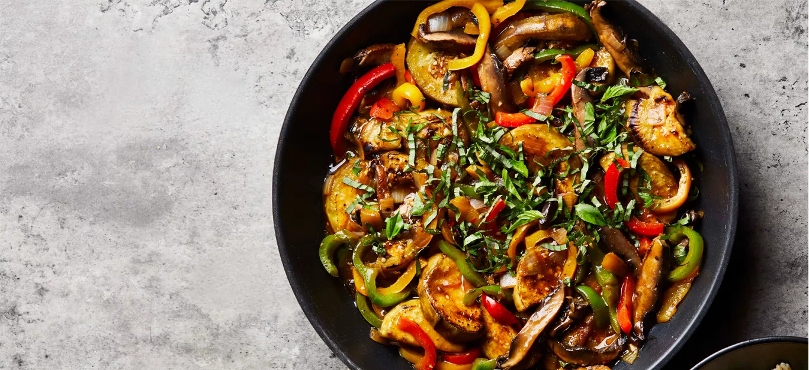

Thai Basil Eggplant

Description
Thai Basil Eggplant it's the best. It's vegan, so you know it's good!
Ingredients
- 1 large eggplant, peeled, halved lengthwise, and cut into ¾-inch slices
- 3 red, green, and/or yellow bell peppers, thinly sliced
- 1 lb. portobello mushrooms, stems and gills removed, cut into ½-inch slices
- 1 cup chopped onion
- ¼ cup hoisin sauce
- 2 tablespoons reduced-sodium soy sauce
- 3 cloves garlic, minced
- 2 teaspoons grated fresh ginger
- 2 teaspoons arrowroot powder
- ½ cup thinly sliced fresh Thai basil
- 4 cups hot cooked brown rice
- 1 tablespoon sriracha sauce (optional)
Steps
- In an extra-large skillet cook eggplant, peppers, mushrooms, and onion over medium 8 to 10 minutes or until almost tender, stirring occasionally and adding water, 1 to 2 tablespoons at a time, as needed to prevent sticking. (If necessary, cook vegetables in batches then return all vegetables to skillet.)
- In a small bowl stir together the next five ingredients (through arrowroot powder) and 1 cup water. Add to vegetables; cook 2 to 3 minutes or until thickened. Stir in half of the basil.
- Serve vegetable mixture over rice. Sprinkle with remaining basil and, if desired, sriracha.